data("anscombe")
anscombe10 First principles of data visualization
10.1 Overview
Up to this point we have looked at our data through numbers: counts, means, standard deviations, residuals. Numbers compress information, which is useful when you want a single value to compare or to put in a sentence. But numbers also hide information, and what they hide can change the answer to a research question.
This chapter is about the other half of looking at data: visualization. The chapter does not contain plotting code yet. The reason is deliberate: it is much easier to learn the how of plotting once you know the what and the why. We start with the questions a good plot answers, the conceptual framework that organizes every plot you will ever make, the principles that distinguish a good plot from a bad one, and the kinds of judgment calls you will face when reading or making one. The tools to translate these decisions into actual plots in R come in Chapter 30, in Section 5.
The plots that appear throughout this chapter are produced with ggplot2, the R package you will learn in Chapter 30. The code for each plot is hidden for now, so you can focus on the visual outcome rather than the syntax. You will revisit these examples and reproduce them yourself once you have learned the package.
10.2 Why visualize?
A famous example illustrates the problem with relying on summary statistics alone. Anscombe’s quartet is a set of four small datasets, constructed by the statistician Frank Anscombe in 1973, that have nearly identical summary statistics. The quartet is built into R, so you can inspect it directly:
The data frame has eight columns: four x columns (x1, x2, x3, x4) and four corresponding y columns (y1, y2, y3, y4). Each (x, y) pair is one of the four datasets. Each dataset has 11 observations.
Compute the means of all eight columns:
sapply(anscombe, mean)
# x1 x2 x3 x4 y1 y2 y3 y4
# 9 9 9 9 7.50 7.50 7.50 7.50All four x means are 9.0 and all four y means are 7.50. The four standard deviations agree to two decimals as well, and the four correlation coefficients between x and y are all approximately 0.82. If you compute the line of best fit (the regression line) for each pair, all four lines are essentially the same.
By every numerical summary you can think of at this point, the four datasets are interchangeable.
When you plot them, they look completely different.
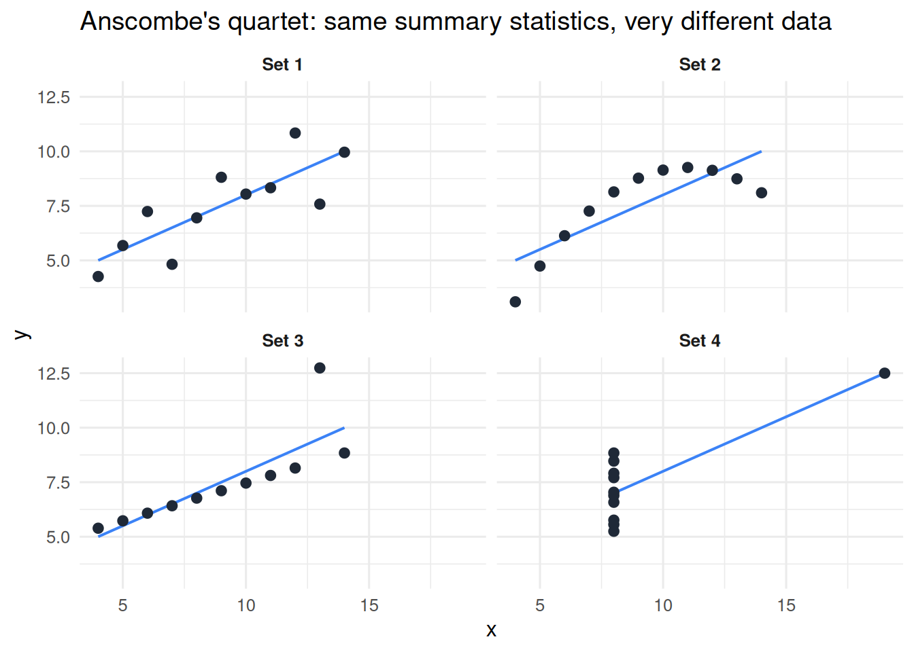
Dataset 1 is a clean, roughly linear relationship. Dataset 2 is a smooth curve where a straight line is the wrong model entirely. Dataset 3 is a near-perfect linear relationship plus one extreme outlier that pulls the regression line away from the true pattern. Dataset 4 is a vertical line of constant x with one isolated point at a very different x; that single point is what creates the apparent correlation.
Four datasets, four very different stories, identical summary statistics. The lesson Anscombe drew, and the one this book takes seriously, is short: always plot your data. Numerical summaries do not protect you from misreading what is actually in the dataset.
A good visualization does things that numbers alone cannot:
- It reveals the shape of a distribution (symmetric? skewed? bimodal?).
- It shows the relationship between variables (linear? curved? no pattern?).
- It exposes outliers and unusual observations.
- It communicates findings to others quickly and intuitively, in a way that a table of numbers cannot.
Here is a video from YouTube that explains two uses of data visualization:
10.3 The grammar of graphics
Most modern data-visualization systems (including ggplot2, the R package you will learn in Chapter 30) are based on a framework called the grammar of graphics, formalized by the statistician Leland Wilkinson. The core idea is that any plot is built from the same three ingredients, combined in different ways.
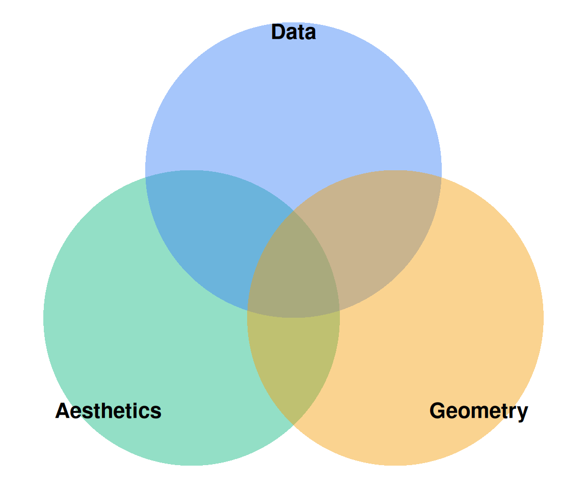
Data. The dataset you want to visualize. Without data there is nothing to plot. The data are usually a data frame.
Aesthetics. A mapping from variables in the data to visual properties of the plot. Examples: the x-axis represents hours_weekly; the y-axis represents aggression; the color of each point represents condition; the size of each point represents age. Each aesthetic mapping turns one variable into one visual channel.
Geometry. The visual shape used to represent each observation. Examples: points (a scatterplot), bars (a bar chart), lines (a line chart), boxes (a boxplot), tiles (a heatmap).
By choosing data, aesthetics, and a geometry, you specify the plot. The grammar is called a “grammar” by analogy with language: just as a finite vocabulary plus a set of rules generates an unbounded number of sentences, a finite set of aesthetics and geometries plus a dataset generates an unbounded number of plots.
This vocabulary will become concrete the moment you write your first ggplot2 line. The point of introducing it now is that plots are not arbitrary collections of marks on a page. They are the result of three explicit decisions, and you can usually improve a bad plot by going back and rethinking one of the three.
10.4 Seven principles of good data visualization
Reasonable people disagree about details, but the field has converged on a small set of principles. The seven that follow are the most consequential for the kinds of plots you will make as a researcher. We state each one as a directive and then explain it.
10.4.1 1. Show the data, not just summaries
A bar chart that displays only the group means is a bar chart that hides the individual observations. The reader cannot tell whether the difference between groups reflects a consistent difference across all participants or a small number of extreme participants pulling the mean in one direction. Whenever possible, show the individual data points (for example, as a scatter or jittered dots) in addition to any summary statistic, or use a geometry like a boxplot or violin plot that displays the distribution rather than collapsing it to a single number.
Bad example. A bar chart of group means, with no indication of within-group variability or individual scores.
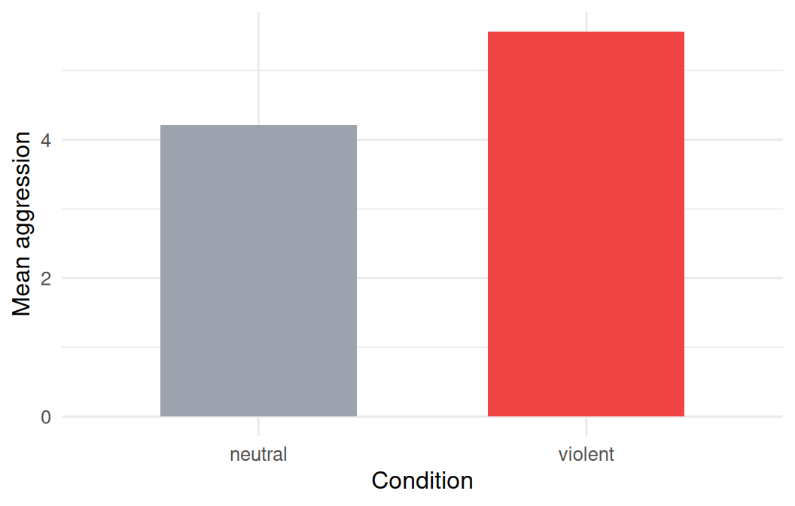
Good example. The same group means, with all individual scores overlaid as jittered points. Now the reader sees the spread within each group and can judge whether the difference in means reflects a consistent shift or a few extreme scores.
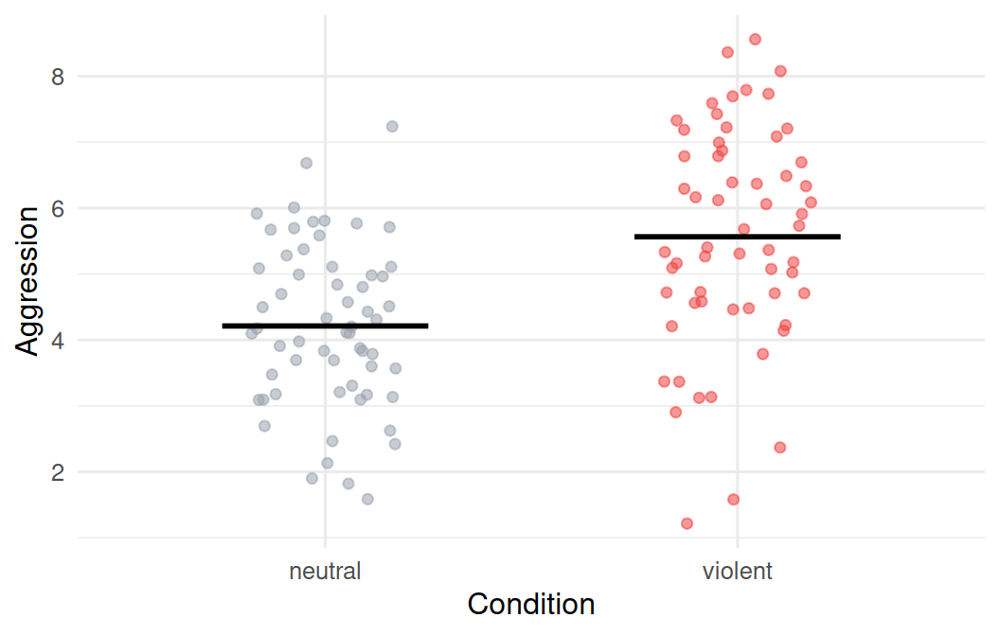
10.4.2 2. Choose the right geometry for the data type
The right geometry depends on what kind of variables you have:
- One continuous variable, distribution. Use a histogram or a density plot. These show the shape of the distribution: where it is centered, how spread out it is, whether it is symmetric or skewed, whether it has a single peak or multiple peaks.
- One categorical variable, counts. Use a bar chart. Each bar represents a category; the bar height represents the count or proportion in that category.
- Two continuous variables, relationship. Use a scatterplot. Each observation is one point; the relationship between the variables (linear, curved, none) becomes visible at a glance.
- One continuous variable across one categorical variable, group comparison. Use a boxplot, a violin plot, or overlaid histograms. These show how the distribution of the continuous variable differs across groups.
There are more advanced choices for more complicated questions, but the four above cover most of what you will plot.
Bad example. A bar chart used to display the relationship between two continuous variables (hours_weekly and aggression). Bar charts are designed for categorical comparisons; using one here forces a continuous variable into discrete bars and discards the relationship.
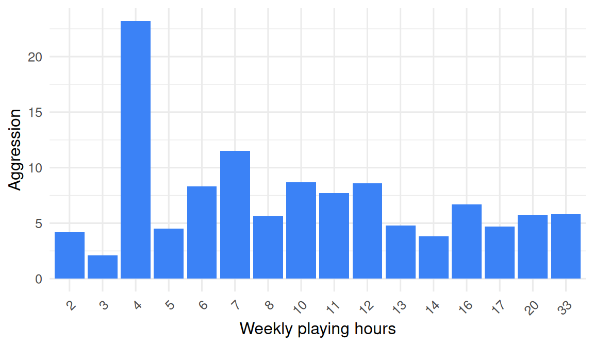
Good example. A scatterplot. Each participant is one point; the relationship (or absence of one) is visible directly.
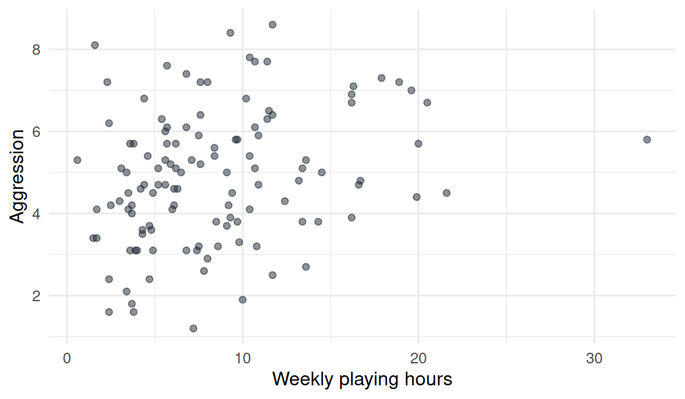
10.4.3 3. Label everything clearly
Every axis needs a label. The label should describe the variable in plain language (“Aggression Score (1-10)”), not the column name from the dataset (aggression). If you use color or shape to encode a variable, include a legend that explains what each color or shape means. Give the plot a title that states what it shows. A reader who sees the plot for the first time, with no other context, should be able to identify what is being shown.
Bad example. A scatterplot with no title, default axis labels (the raw column names), and no legend explanation. A reader without context cannot tell what is being shown.
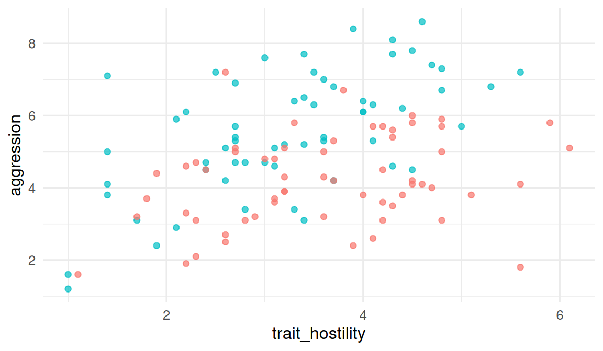
Good example. Same plot with a descriptive title, plain-language axis labels, and a legend identifying the conditions.
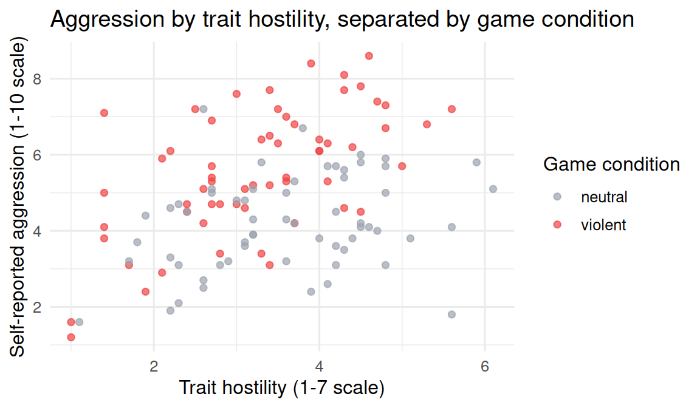
10.4.4 4. Avoid chart junk
The term chart junk was popularized by the statistician Edward Tufte. It refers to visual elements that do not encode information: unnecessary gridlines, 3D effects on a 2D plot, decorative images, drop shadows, gradient fills, excessive colors. Chart junk distracts the reader from the actual data and signals carelessness. Every element on a plot should serve a purpose. If you can remove an element without losing information, remove it.
Bad example. The same data, encrusted with chart junk: gradient bars, dark gridlines, heavy borders, oversaturated colors.
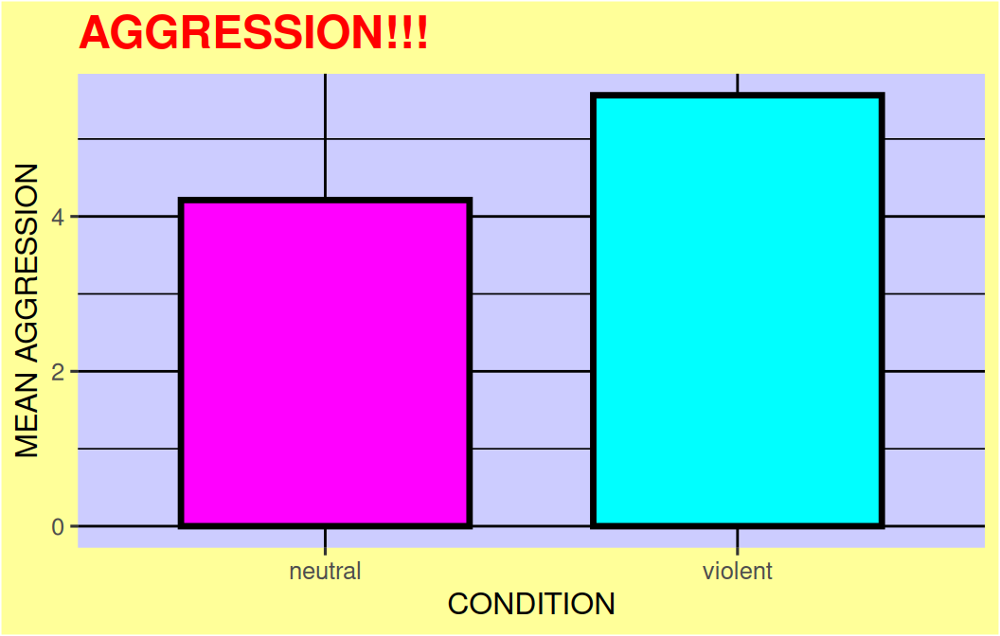
Good example. Same data, with everything that does not encode information removed. The bars are the only visual element with weight; the eye goes directly to the comparison.
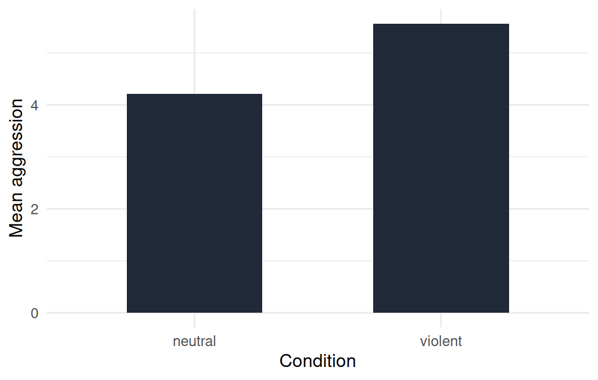
10.4.5 5. Do not mislead with scales
The scale of an axis controls how big a difference looks on the page. A small difference in y-values can be made to look enormous by truncating the y-axis to start near the data values rather than at zero. The classic example: bars that visually look twice as tall but actually differ by 0.1 on a scale of 1 to 10, because the y-axis has been truncated to range from 4.0 to 6.0 instead of 0 to 10. This is misleading and you should not do it.
Two related rules. Do not use dual y-axes. A plot with two different y-axes (one on the left, one on the right) almost always misleads, because the reader cannot tell which line corresponds to which axis without effort, and the apparent relationship between the lines depends entirely on how the two axes are scaled. Use consistent scales when comparing plots. If you show two plots side by side, the reader will compare them visually; using different scales for the same variable will mislead.
Bad example. The y-axis is truncated to range from 4.0 to 6.0. The two bars look dramatically different in height; the visual impression is that the violent condition produced an enormous effect.
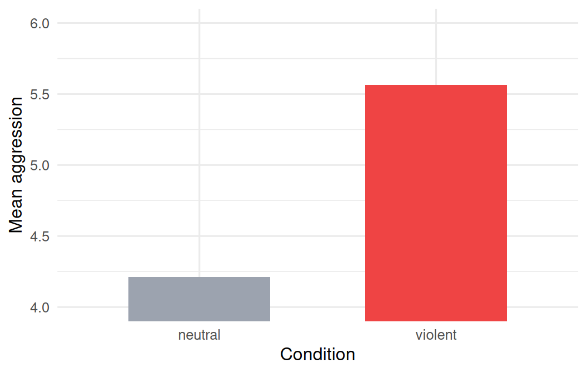
Good example. Same data, y-axis on its natural scale (1 to 10). The difference between conditions is real and interpretable, but it is not visually inflated.
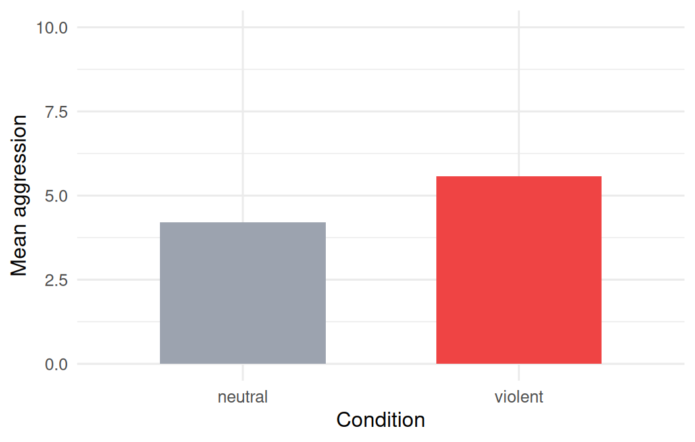
10.4.6 6. Avoid pie charts
Pie charts ask the reader to compare the angles of slices, and humans are demonstrably bad at comparing angles. Comparing the heights of bars is much easier and more accurate. Almost every situation in which someone reaches for a pie chart is better served by a bar chart. There are a few special cases (a pie with two or three slices when the goal is to communicate “this small slice versus everything else”), but the default should be a bar chart.
Bad example. A pie chart of gender counts. Comparing slices by angle is harder than reading bar heights.
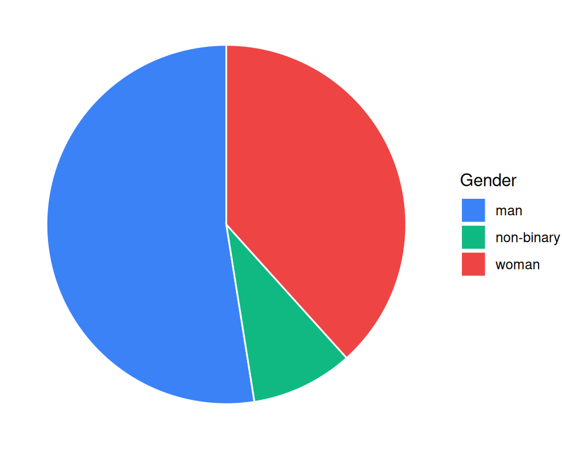
Good example. Same data as a bar chart. The differences in counts are immediate.
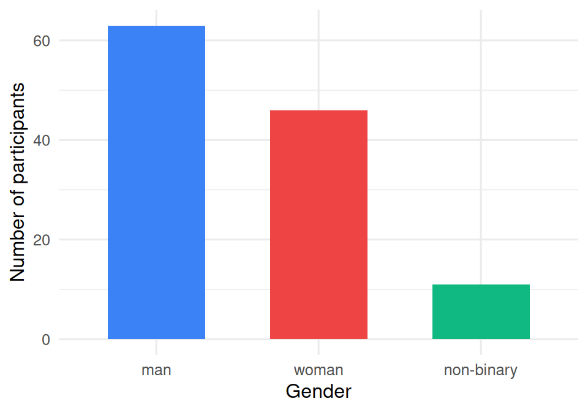
10.4.7 7. Use color purposefully
Color in a plot should encode information, not decorate it. Each distinct color should mean something specific (one experimental condition, one category of participants, one variable). Use a small number of colors; a plot with ten colors is a plot the reader cannot interpret.
A practical detail: roughly 8 percent of men and 0.5 percent of women have some form of color-vision deficiency, most commonly red-green confusion. Plots that distinguish groups by red versus green are unreadable for those readers. Use color palettes designed to be colorblind-friendly (any modern plotting library, including ggplot2, provides such palettes), and where possible reinforce color with a second visual channel like shape or line type, so the plot remains interpretable even for readers who cannot distinguish the colors.
Bad example. Each participant has been given a different rainbow color for no reason. The colors do not encode anything; they are pure decoration. The reader gets no information from them and the plot is harder to read than the same plot in one color.
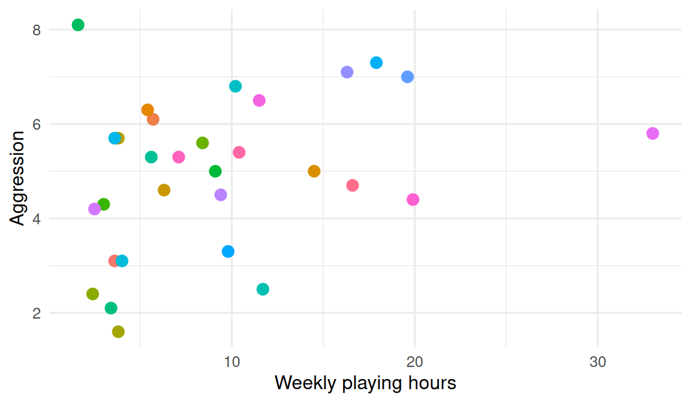
Good example. Color is used to encode the experimental condition (the variable the reader actually wants to compare), with a colorblind-safe palette (blue and orange).
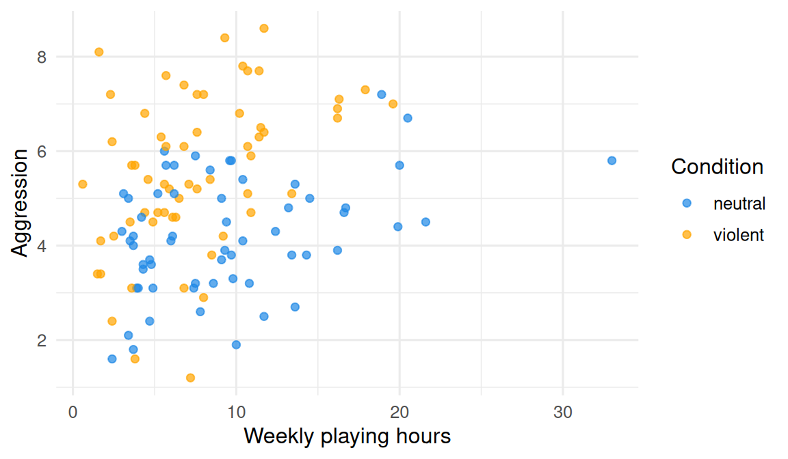
10.5 Applying the principles
The principles are abstract; they become useful when you apply them to a specific plot. The following five short scenarios illustrate the kind of judgment a careful researcher makes when reading or designing a visualization.
Scenario 1. A researcher wants to show how aggression scores are distributed across all 120 participants. Two options: (a) a bar chart showing the mean aggression score as a single bar, or (b) a histogram showing the distribution of all 120 aggression scores. The histogram is more informative. A single bar tells you one number (the mean). The histogram shows the shape of the distribution, the spread, possible outliers, and any clustering. The bar discards 119 numbers; the histogram keeps them. Principle 1 in action.
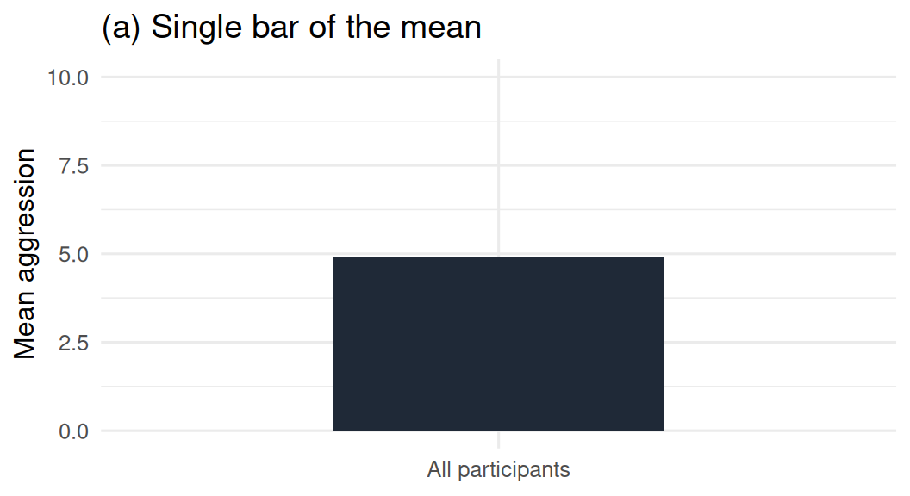
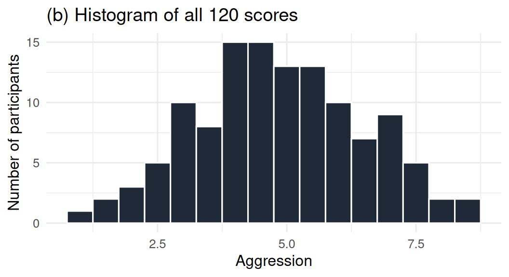
Scenario 2. A researcher wants to compare aggression between the violent and neutral conditions. He produces a bar chart with two bars (one per condition) showing the group means. What is missing? At least three things. The plot does not show the spread of scores within each condition (so you cannot tell whether the difference between groups is large relative to within-group variation). It does not show the individual data points (so you cannot tell whether the difference is driven by all participants or by a few extreme ones). It does not show the shape of the within-group distributions (so you cannot tell whether either group is skewed or has outliers). Better alternatives: overlay the individual data points on the bars; use a boxplot or violin plot per condition; or show the distribution as overlaid histograms. Each of these shows the data, not just the summaries.
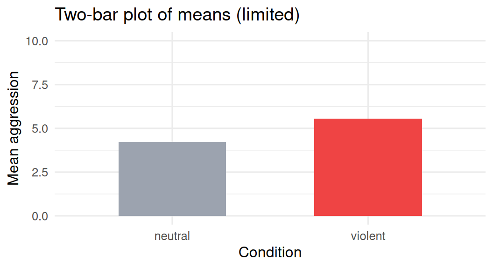
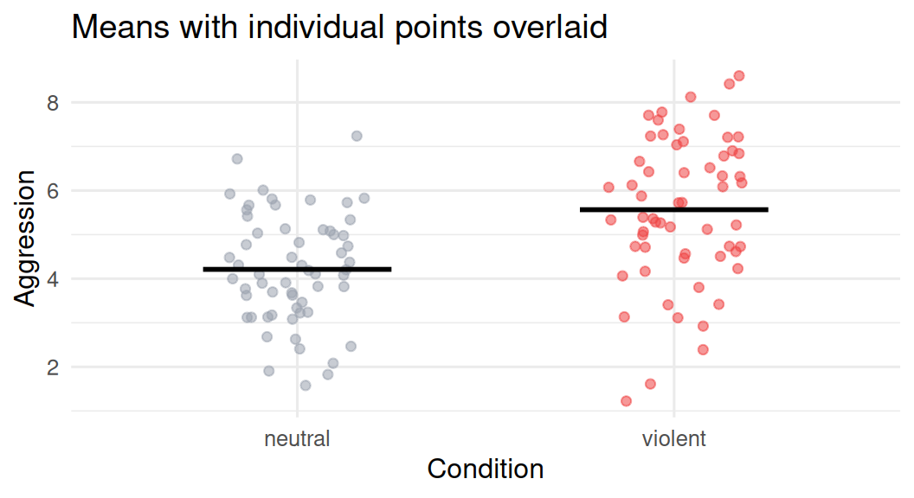
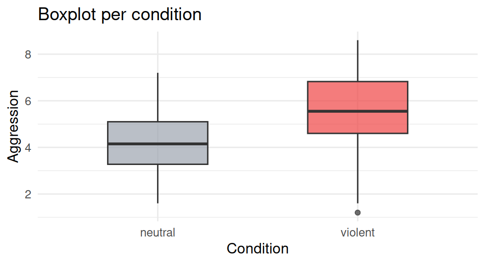
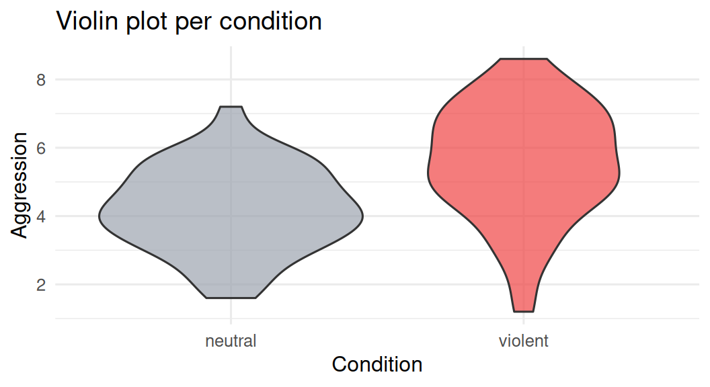
Scenario 3. A researcher wants to examine whether there is a relationship between weekly playing hours (a continuous variable) and aggression (a continuous variable). Which geometry is most appropriate? A scatterplot. Each participant becomes one point at the (hours_weekly, aggression) coordinates, and the relationship (positive, negative, none, linear, curved) is visible directly. A bar chart is wrong because both variables are continuous; a pie chart is wrong because the question is not about proportions; a boxplot is wrong because neither variable is categorical.
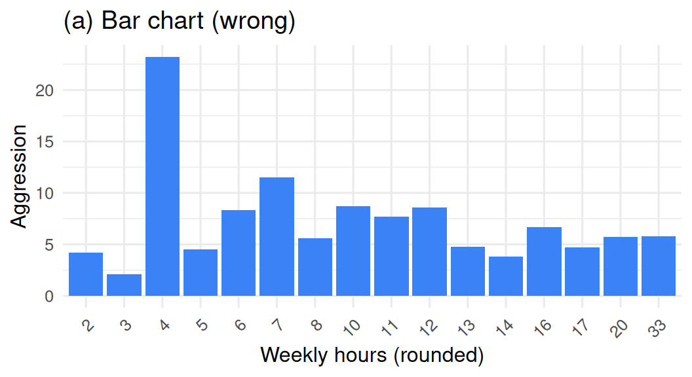
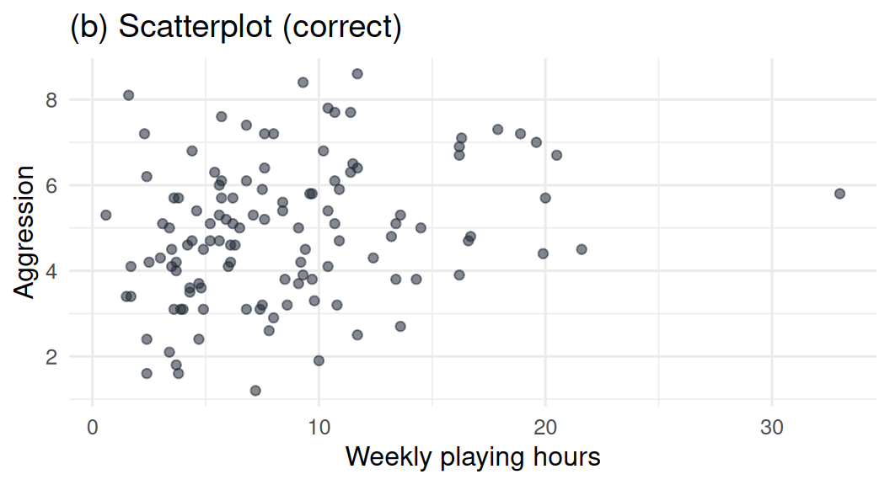
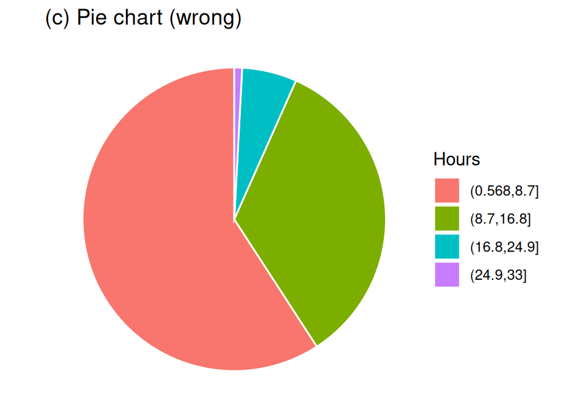
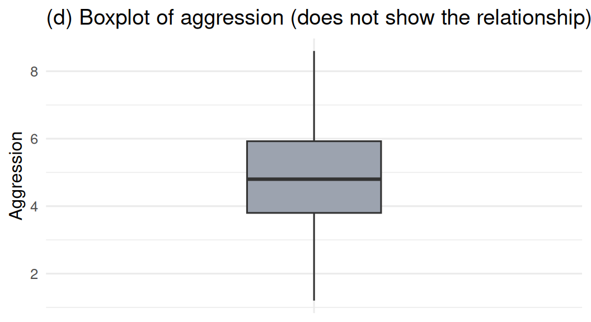
Scenario 4. Suppose you have the same data displayed two ways: option A is a boxplot with one box per condition, with individual data points overlaid; option B is a small table reporting “Violent: M = 5.56, SD = 1.66; Neutral: M = 4.21, SD = 1.24.” Both convey the same basic information. When is the plot better, and when is the table better? The plot is better when you want to communicate to a broad audience, when you want the reader to see the distribution rather than just the summary, and when you suspect the distributions might be unusual (skewed, bimodal, with outliers) and want the reader to check that for themselves. The table is better when you need exact numbers (for reporting in a paper), when the audience is technically sophisticated and prefers precision, or when you have many groups and a plot would become cluttered. In practice, good scientific communication often uses both: a plot for pattern, a table or in-text numbers for precision.
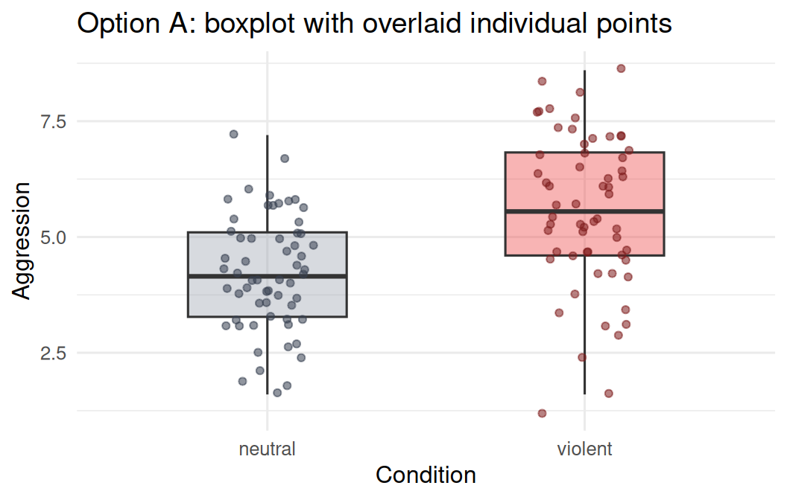
| Condition | M | SD |
|---|---|---|
| Violent | 5.56 | 1.66 |
| Neutral | 4.21 | 1.24 |
Scenario 5. A researcher plots aggression on the y-axis (the variable ranges from 1 to 10) but sets the y-axis limits to 4.0 to 6.0. The bars for the two conditions now appear dramatically different in height. What is wrong with this? The truncated y-axis visually exaggerates the difference. The actual difference between the two condition means (about 1.35 points on a 1-to-10 scale) is real and worth reporting, but it is not as large as the truncated plot makes it look. The fix is to start the y-axis at the natural minimum of the scale, or at least to show enough of the range that the difference is in proper proportion. If the difference is small relative to the scale of the variable, that is itself a finding and should not be visually inflated. Principle 5 in action.
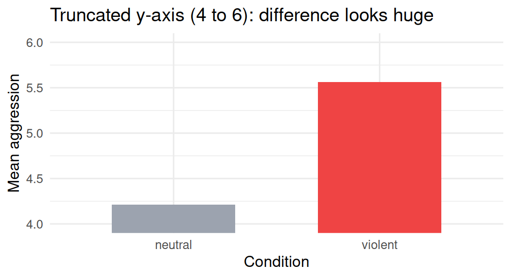
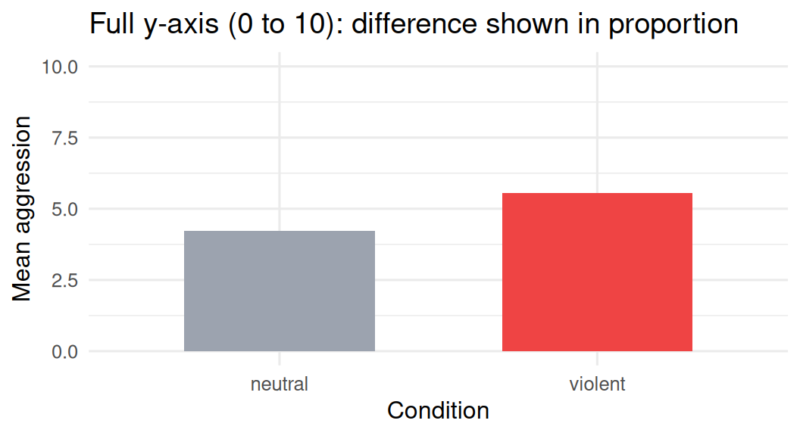
10.6 The wrangle, describe, visualize workflow
You now have three skills that work together:
- Data wrangling (Chapters 8 and 9): getting the data into the right shape, selecting the variables you need, filtering to the rows that are relevant, creating derived variables.
- Descriptive statistics (Chapter 9): summarizing the data numerically, with
summary(),mean(),psych::describe(), or a customsummarize()pipeline. - Data visualization (this chapter, conceptually; Chapter 30 onwards, in code): communicating patterns visually.
The order in practice is almost always: wrangle first (clean, filter, reshape), then describe (compute summaries to check what you have), then visualize (plot what looks important). Wrangling is usually the largest time investment and the least visible step in a finished paper. Descriptives are how you sanity-check the wrangling. Visualization is how you discover what is worth modeling and how you communicate the results once you have modeled them.
10.7 Looking ahead
ggplot2, the R package that lets you implement the principles of this chapter in actual code, is introduced in Chapter 30 (in Section 5). It is the visualization component of the tidyverse you loaded in Chapter 9, so no new installation is required when you get there. You will see how each of the three ingredients of the grammar of graphics (data, aesthetics, geometry) becomes a piece of code, and how the same dataset can be displayed in radically different and informative ways.
The chapters between this one and Chapter 30 will continue to use ggplot2 figures as illustrations, with the code kept hidden, so that you can focus on the substantive content before learning the package itself.
For now, the principles in this chapter are the things to keep in mind. Good plots are not the result of decorative talent; they are the result of a small number of decisions made carefully.
10.8 Check your understanding
1. What is the lesson of Anscombe’s quartet?
2. According to the grammar of graphics, what are the three ingredients of any plot?
3. Which geometry is most appropriate for showing the distribution of one continuous variable (e.g., the aggression scores of 120 participants)?
4. Which geometry is most appropriate for showing the relationship between two continuous variables (e.g., weekly playing hours and aggression)?
5. Which of the following plots violates the principle “show the data, not just summaries”?
6. What is “chart junk”?
7. What is wrong with truncating the y-axis to a narrow range that excludes zero (e.g., showing aggression on a 4.0-6.0 scale when the variable can range from 1 to 10)?
8. Why does this chapter recommend avoiding pie charts?
9. How should color be used in a plot?
10. What is the recommended order of operations for a typical data-analysis workflow?